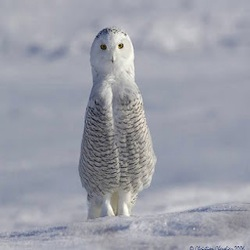
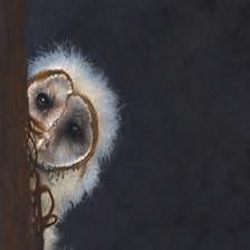
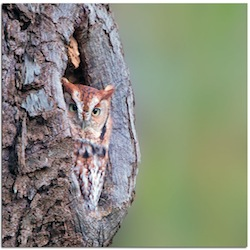

Snowy Owls migrate to Canada, Europe, Asia, and the northern United States throughout the year. They are unlike most
owls because they are active during the daytime. They spend their summers north of the Arctic Circle, which is
their favorite habitat. Snowy Owls mate, create crude nests and lay eggs at their summer migration spot.
Young, male Snowy Owls are whiter than the female owls and have fewer spots. As the owls mature, the male owls turn extremely
white while the females become darker and have bands of black covering them.
Snowy Owls eat lemmings and other rodents; however, they really enjoy lemmings and can
eat 3-5 a day. If lemmings are not available, and times are tough, a Snowy Owl can eat an animal
the size of a goose. They are fierce birds of prey, and are even known to scare wolves away from their nests.
Ancient Knowledge
Owls during the Ancient Greek era
Athena, the daughter of Zeus, is known as the goddess of the night and wisdom. Athena's wisdom was
given to her from her owl companion who revealed unseen truths. Athena was able to tell the entire truth,
and not half-truths because of her trusty owl companion. This made her well known-for being honest and wise, which is why
owls are associated with wisdom.
During the Greek era owls were protected and honored. The Ancient city of Athens, had a coin featuring Athena
on one side, and her owl companion on the other side. The owl on the coin was supposed to keep a watchful eye over trade and commerce.
Gallery



About Us
The folks at Knowledge.com really love owls. This site is dedicated to all of those owl
lovers out there who would like to spend some time learning about these magnificent, mysterious, and wise creatures.
If you have any questions or comments about the site feel free to email us at info@knowledge.com.
Thanks for visiting!
"Of all of the horrid, hideous notes of woe, Sadder than owl-songs or the midnight blast, Is that portentous phrase, 'I told you so.'"
— Lord Byron
Sign Up
Sign up to receive emails about our newest owl knowledge. Don't worry, we only send emails once a week.